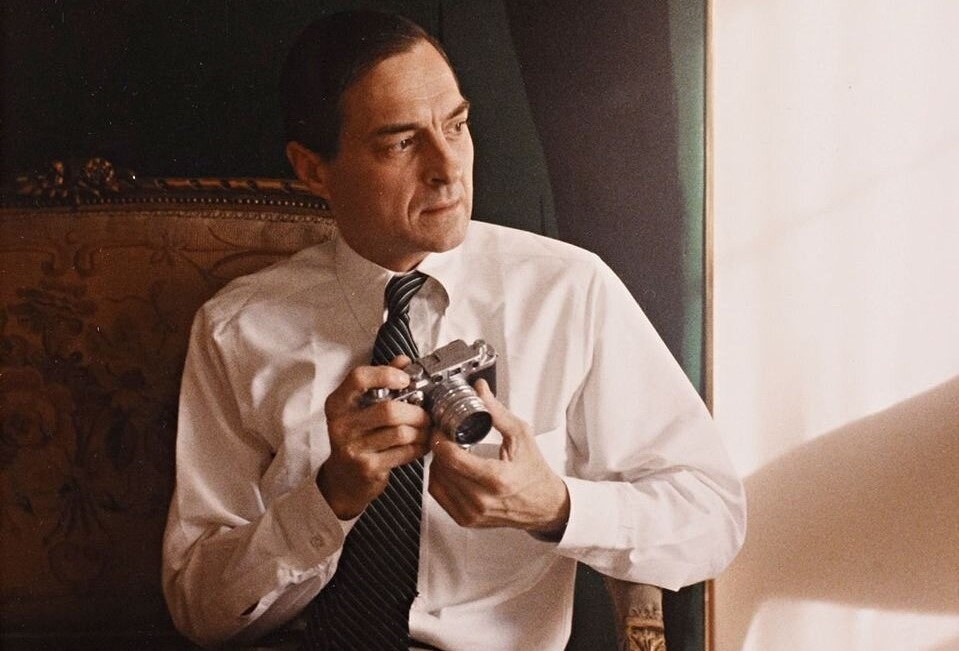

Steve McCurry is an American photographer who is mainly known for his work as a photojournalist.
His most famous photograph, “Afghan Girl”, is an outstanding image that you’ve all probably seen
on a National Geographic cover.
Ansel Adams
Ansel Adams was an American photographer who specialised in the black and white photography
of rural landscapes. He was an environmental activist and one of the pioneers of modern nature
photography.
Annie Leibovitz
Speaking of commercial photography and celebrity portraits, there’s one name that can never be overlooked.
Annie Leibovitz is an American photographer who is known for her engaging portraits that are honest and intimate.
Henri Cartier-Bresson
In street photography, Henri Cartier-Bresson is the true
master of capturing the decisive moment. He was a French humanist photographer and also one of the founders
of the iconic photographic cooperative Magnum Photos.

William Eggleston
William Eggleston has transformed the mundane into art. With his images, he builds the face of the mundane world we live in and proves that even the trivial can be complex and poetic.
He’s also considered to be one of the pioneers in color photography.
Dorothea Lange
Dorothea Lange was an American photographer who worked in the field of photojournalism. Dorothea’s
most famous and iconic capture ‘Migrant Mother’ is seen by many as the image of hardship, pain but
also resilience felt by Americans during the Great Depression.